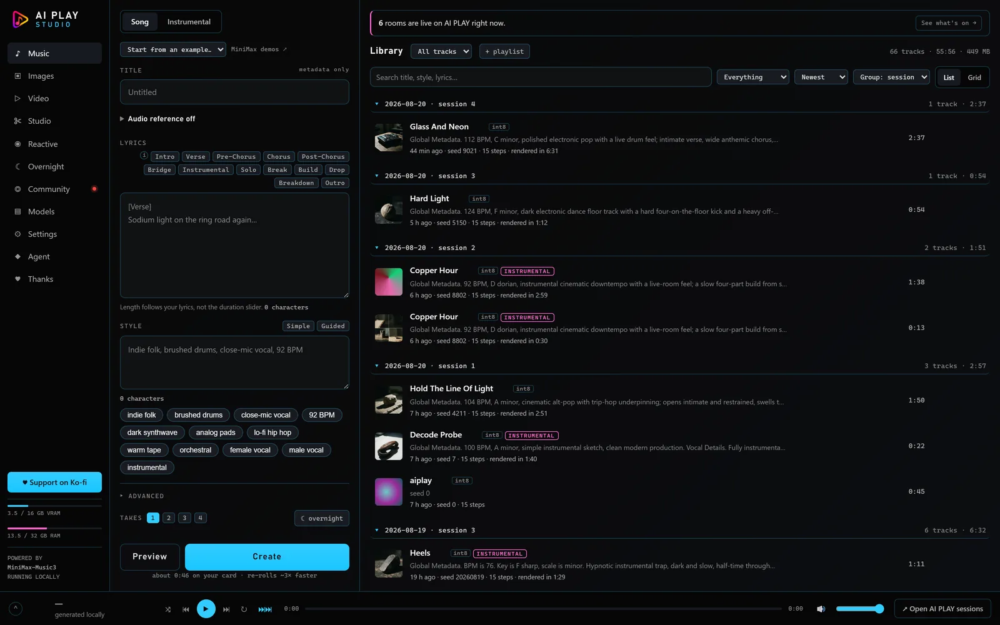
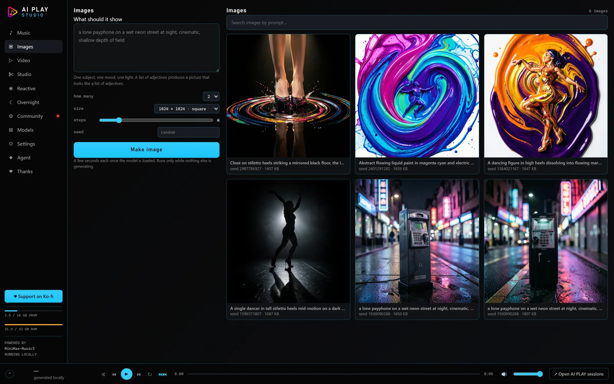
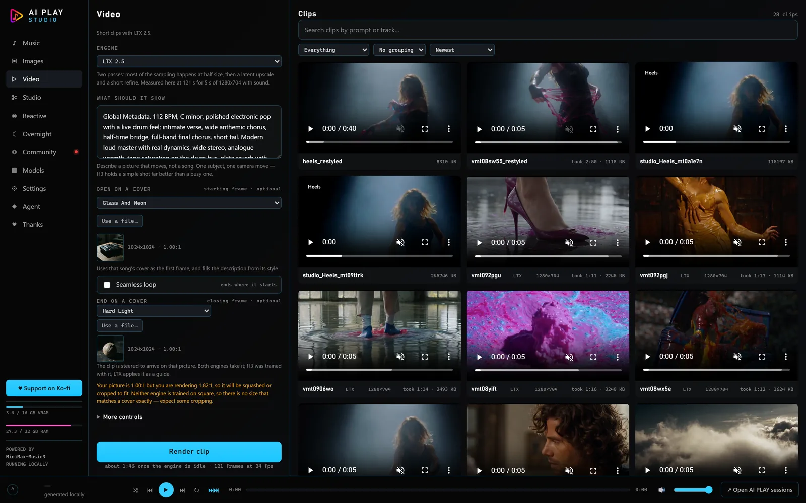
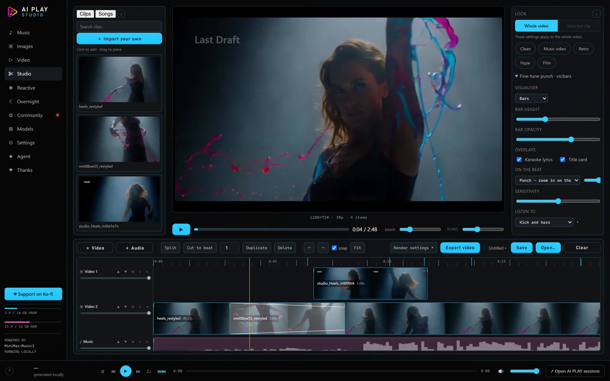
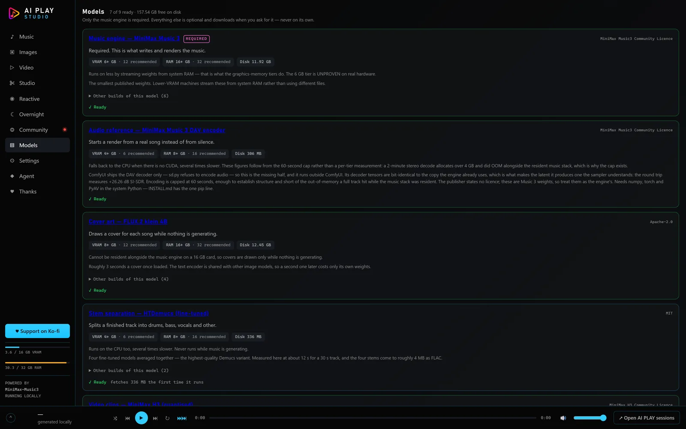
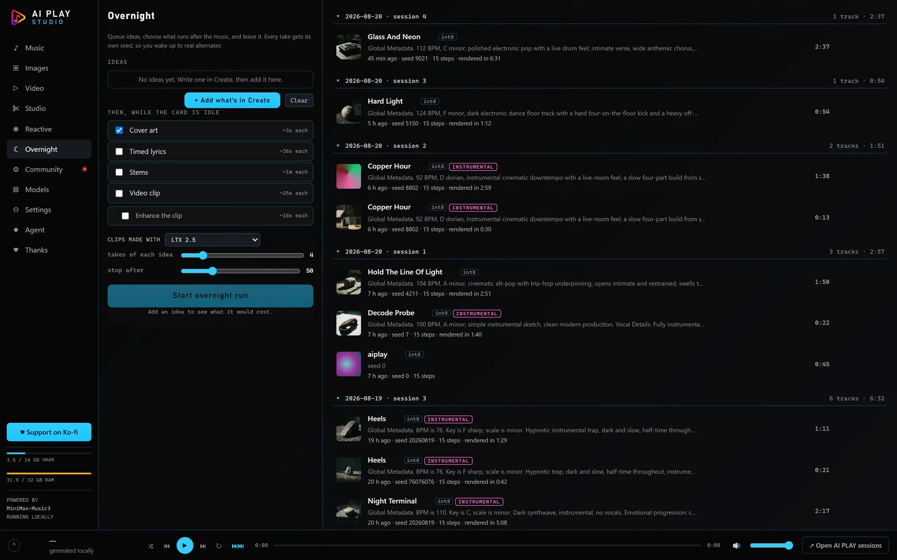

A song, words and all
“Glass and Neon” — 2:37, written and sung on a home GPU from one paragraph of direction.
Write and render a song. Draw the cover. Generate the video. Cut them together, mix it in a real DAW, composite it, and publish — without an account, a subscription, or a single byte leaving the machine.
No cloud service was called and no credits were spent. Press play.
“Glass and Neon” — 2:37, written and sung on a home GPU from one paragraph of direction.
Five seconds at 1280×704, from a sentence.
An audio reference re-rendered at three denoise settings — the dial that decides how much of the original survives.
Nine screens, one queue, one graphics card. Each of these is a real tool, not a demo.
A style description and lyrics become a finished, mastered track with a cover. Instrumentals too.
MiniMax Music 3Six image engines, a full non-destructive editor with layers, masks, selections and text, plus background removal, upscaling and vectorising.
FLUX · Z-Image · Anima · Ideogram · your own checkpointsText to video, image to video, or restyle a clip you already have while keeping its motion.
MiniMax H3 · LTX 2.5 · WAN VACEAttach a song, cut it into scenes on its own beat grid, cast characters with reference sheets, storyboard, render, and assemble to a timeline.
The Workflow screenPiano roll, tempo and meter maps, a mixer with sends and returns, insert racks, recording, stems, and delivery checks against streaming targets.
Local synthesis, no plugins neededComps, layers, keyframes, effects, masks, mattes and precompose — the After Effects shape, driven by hand or by an agent.
The VFX screenBlock a shot in Blender as grey boxes, then use that as a control video so the render obeys the camera move you chose.
Blender previz → WAN VACETurn a rendered character sheet into a mesh you can open in Blender, with a skeleton where the runtime allows it.
TripoSG · UniRigChat to a model running on your own card and ask it to make things. It reaches the Studio's own tools and asks before spending.
Qwen3-4B, on your GPUNo account, no upload, no per-render charge, no terms that change next quarter. Your unfinished work stays unfinished in private.
Every model is downloaded from its own publisher, and the Models screen shows you the licence and the territory it applies to before anything is fetched. Some are free for commercial use and some are not. The program tells you which, and refuses to guess on your behalf.
One door to the graphics card, and it writes the graph, the prompts verbatim, the seed, the step count, the size, every model file and the hash of every reference before the card spends. Failed renders are recorded too. You can always answer “how was this made?”.






It needs Node.js and a working ComfyUI. The setup script wires them together and tells you what is missing rather than failing silently.
git clone https://github.com/Senzube4n/AIPLAY-Studio.git cd AIPLAY-Studio npm install npm run setup # finds ComfyUI, checks the GPU, writes your config npm start # then open http://127.0.0.1:4173
| Part | Works | Comfortable |
|---|---|---|
| Graphics card | 8 GB VRAM, NVIDIA | 16 GB — the card this was built and measured on |
| System memory | 16 GB | 32 GB, for the larger video models |
| Disk | ~40 GB for a music-only setup | 200 GB+ if you want the video models too |
| OS | Windows, Linux | — |